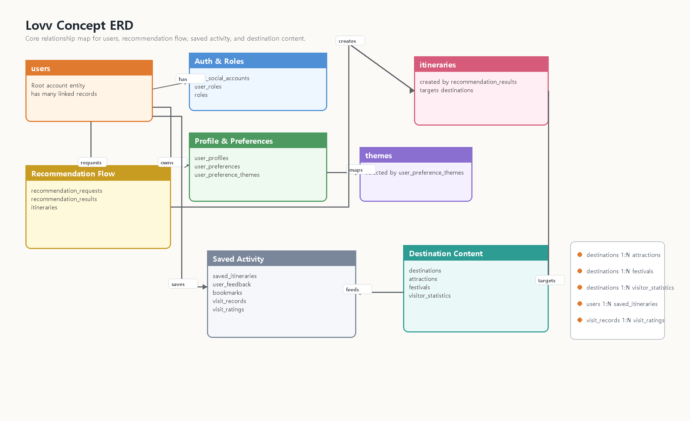

로브 (Lovv) 데이터베이스 설계 명세서
문서 버전: v0.3
문서 상태: 설계 진행중 (Designing)
기준 문서: 요구사항 명세서 v1.7, 데이터 수집 계획서 v0.6, Agent 명세서 v0.4, 기술 명세서 v0.4, API 명세서 v0.1
1. 문서 개요
1.1 목적
본 문서는 로브 서비스의 핵심 데이터 모델, 테이블 후보, 관계, 인덱스, 보존 정책을 정의한다. PoC에서는 일부 데이터를 정적 파일과 로컬 스토리지로 대체할 수 있으나, Production 전환 시 본 문서를 기준으로 데이터베이스를 설계한다.
1.2 설계 기준
| 항목 | 결정 | 비고 |
|---|---|---|
| 기본 모델 | 관계형 데이터베이스 우선 | 서비스 핵심 데이터는 정규화된 관계형 모델을 기준으로 설계한다. |
| RDBMS | MySQL 8 LTS | 사용자, 목적지, 축제, 추천, 저장 일정, 검토 이력 등 핵심 트랜잭션 데이터를 저장한다. |
| NoSQL | AWS DynamoDB | AgentCore/SAM 실행 상태, 비동기 작업, 사용자 이벤트 로그, API 로그처럼 TTL이 필요한 비정형 데이터를 저장한다. |
| RAG Vector Index | S3 vector 기능 활용 | RAG 검색용 chunk, embedding, metadata filter를 S3 vector 기능 기반 검색 인덱스로 관리한다. 별도 벡터 DB 제품 도입은 기본 전제가 아니다. |
| 대화 전문 | 저장하지 않음 | 요구사항 NFR-013에 따라 사용자 대화 로그 전문은 서버나 외부 저장소에 장기 저장하지 않는다. |
| 보조 저장소 | DynamoDB 및 S3 vector index | 로그성 데이터와 검색 보조 데이터를 MySQL 원장과 분리해 관리한다. |
1.3 저장소 책임
| 저장소 | 책임 | 주요 데이터 |
|---|---|---|
| MySQL 8 LTS | 서비스 원장, 트랜잭션, 조회 기준 데이터 | 사용자 계정, 역할, 선호, 일정, 피드백, 북마크, 방문 기록, 목적지, 축제, 검수 이력 |
| DynamoDB | 비정형 실행 상태, 이벤트 로그, TTL 로그, 수집 정규화 결과 | Agent 실행 상태, async job, 사용자 행동 이벤트, API 호출 로그, feedback clickstream, admin operation trace, City/Attraction/Festival/VisitorStatistics 정규화 문서 |
| S3 vector index | 의미 검색 인덱스 | 목적지·축제·관광지 문서 chunk, embedding, source reference, metadata filter |
| Object Storage | 원본 수집 파일과 대용량 정적 산출물 | S3 Raw 수집 원본, 전처리 결과, 이미지/첨부 파일 |
2. 개념 설계
2.1 핵심 도메인
| 도메인 | 설명 | 대표 엔티티 |
|---|---|---|
| 사용자·권한 | 일반 여행 사용자, 관광 운영자, 서비스 관리자, 데이터 제공 기관의 계정과 권한 | User, SocialAccount, Role, Organization |
| 개인화 | 온보딩 선호, 북마크, 방문 기록, 별점, 좋아요/싫어요 기반 개인화 입력 | UserProfile, UserPreference, Bookmark, VisitRecord, UserFeedback |
| 여행 콘텐츠 | 국가, 도시, 소도시, 관광지, 축제, 체험, 외부 링크, 방문·관광 통계 | Destination, Attraction, Festival, Experience, VisitorStatistics, ContentSource |
| 추천·일정 | 추천 요청, 추천 결과, 생성 일정, 일정 아이템, 대체 일정 | RecommendationRequest, RecommendationResult, Itinerary |
| 운영 검수 | 수집 데이터 배치, 원천 스냅샷, 검수 상태, 승인·반려 이력 | DataSubmission, DataVerification, AuditLog |
| Agent·로그 | Agent 실행, 비동기 작업, API 호출, 사용자 이벤트, 운영 trace | AgentRun, AsyncJob, EventLog |
| RAG 검색 | 검색 문서, chunk, embedding, metadata filter | RagDocument, RagChunk, S3VectorIndex |
2.2 사용자 데이터 개념 모델
사용자 데이터는 최종 상태를 보존해야 하는 원장 데이터와, 분석·디버깅에 필요한 일시 이벤트 데이터로 나눈다.
| 구분 | 저장소 | 저장 대상 | 저장하지 않는 대상 |
|---|---|---|---|
| 사용자 원장 | MySQL | 계정, 소셜 계정, 역할, 온보딩 결과, 선호 테마, 저장 일정, 피드백, 북마크, 방문 기록, 별점 | 대화 전문, 민감 자유 입력 원문 |
| 사용자 이벤트 | DynamoDB | 로그인/로그아웃 이벤트, 추천 실행 이벤트, 피드백 클릭 이벤트, 화면 이벤트, 오류 로그 | 사용자 상태의 최종 원장, 삭제 권한이 필요한 본문 데이터 |
| 추천 검색 보조 | S3 vector index | 사용자 조건과 매칭할 콘텐츠 chunk 및 embedding | 사용자 개인정보, 대화 전문, 비공개 운영 메모 |
2.3 개념 ERD

3. 논리 설계
3.1 MySQL 논리 모델
MySQL은 서비스 화면과 API가 신뢰해야 하는 최종 상태를 저장한다. 사용자가 조회·수정·삭제할 수 있어야 하는 데이터는 MySQL에 원장으로 둔다.
| 영역 | 테이블 | 책임 |
|---|---|---|
| 인증·권한 | users, user_, roles, user_, organizations | 사용자 식별, 소셜 로그인 연결, 권한과 소속 관리 |
| 사용자 프로필 | user_, user_, user_ | 온보딩 완료 상태, 대도시 스타일 선택, 기본 테마 가중치 |
| 추천 조건 | recommendation_, search_ | 구조화된 추천 요청과 확정 조건 저장 |
| 추천 결과 | recommendation_, recommendation_ | 추천 결과, 점수, explainability, 후보 비교 근거 |
| 일정 | itineraries, itinerary_, itinerary_, saved_ | 생성 일정, 일정 상세, 사용자 저장 목록 |
| 개인화 행동 | user_, bookmarks, visit_, visit_ | 좋아요/싫어요, 북마크, 실제 방문 기록, 방문 별점 |
| 콘텐츠 | destinations, attractions, festivals, experiences, visitor_, content_ | 목적지·관광지·축제·체험, 방문·관광 통계, 출처 원장 |
| 운영 검수 | data_, data_, data_, audit_ | 데이터 제안, 승인·반려, 검수 이력 |
3.2 RDB 사용자 설계
사용자 RDB 설계는 Production 기준의 계정 기반 저장을 담당한다. PoC에서는 로컬 스토리지로 대체할 수 있으나, Production에서는 아래 테이블을 기준으로 마이페이지와 개인화 API를 구현한다.
3.2.1 users
| 컬럼 | 타입 | 제약 | 설명 |
|---|---|---|---|
id | char(36) | PK | 사용자 ID |
email | varchar(255) | unique, nullable | 이메일. 소셜 로그인만 사용할 경우 nullable |
display_ | varchar(80) | not null | 서비스 표시명 |
profile_ | varchar(500) | nullable | 프로필 이미지 |
status | enum | not null | active, blocked, deleted |
last_ | datetime | nullable | 마지막 로그인 시각 |
created_ | datetime | not null | 생성 시각 |
updated_ | datetime | not null | 수정 시각 |
deleted_ | datetime | nullable | 탈퇴 또는 삭제 시각 |
3.2.2 user_social_accounts
| 컬럼 | 타입 | 제약 | 설명 |
|---|---|---|---|
id | char(36) | PK | 소셜 계정 연결 ID |
user_ | char(36) | FK | users.id |
provider | varchar(30) | not null | google, kakao, naver 등 |
provider_ | varchar(255) | not null | 소셜 제공자 사용자 ID |
created_ | datetime | not null | 연결 시각 |
Unique: (provider, provider_)
3.2.3 user_profiles
| 컬럼 | 타입 | 제약 | 설명 |
|---|---|---|---|
user_ | char(36) | PK, FK | users.id |
onboarding_ | boolean | not null | 온보딩 완료 여부 |
onboarding_ | datetime | nullable | 온보딩 완료 시각 |
country_ | varchar(20) | nullable | 한국/일본 등 추천 트랙 |
preferred_ | json | nullable | 선택한 대도시 스타일 스냅샷 |
created_ | datetime | not null | 생성 시각 |
updated_ | datetime | not null | 수정 시각 |
3.2.4 user_preferences
| 컬럼 | 타입 | 제약 | 설명 |
|---|---|---|---|
id | char(36) | PK | 선호 프로필 ID |
user_ | char(36) | FK | users.id |
country_ | varchar(20) | not null | 한국/일본 등 추천 대상 |
selected_ | varchar(80) | nullable | 온보딩에서 선택한 대도시 스타일 |
travel_ | varchar(30) | nullable | 초심자/경험자 등 여행 경험 수준 |
mobility_ | varchar(30) | nullable | 도보, 대중교통, 렌터카 등 이동 선호 |
created_ | datetime | not null | 생성 시각 |
updated_ | datetime | not null | 수정 시각 |
Index: (user_, country_)
3.2.5 user_preference_themes
| 컬럼 | 타입 | 제약 | 설명 |
|---|---|---|---|
preference_ | char(36) | PK, FK | user_ |
theme_ | char(36) | PK, FK | themes.id |
weight | decimal(5,2) | not null | 테마 가중치 |
3.2.6 saved_itineraries
| 컬럼 | 타입 | 제약 | 설명 |
|---|---|---|---|
id | char(36) | PK | 저장 ID |
user_ | char(36) | FK | users.id |
itinerary_ | char(36) | FK | itineraries.id |
title | varchar(160) | nullable | 사용자 지정 제목 |
created_ | datetime | not null | 저장 시각 |
deleted_ | datetime | nullable | 사용자 삭제 시각 |
Unique: (user_, itinerary_, deleted_)
3.2.7 user_feedback
| 컬럼 | 타입 | 제약 | 설명 |
|---|---|---|---|
id | char(36) | PK | 피드백 ID |
user_ | char(36) | FK | users.id |
target_ | enum | not null | destination, festival, itinerary, recommendation_ |
target_ | char(36) | not null | 대상 ID |
feedback_ | enum | not null | like, dislike |
reason_ | varchar(60) | nullable | 선택형 피드백 사유 |
created_ | datetime | not null | 생성 시각 |
updated_ | datetime | not null | 수정 시각 |
deleted_ | datetime | nullable | 삭제 시각 |
Index: (user_, created_), (target_, target_, feedback_)
3.2.8 bookmarks, visit_records , visit_ratings
| 테이블 | 주요 컬럼 | 책임 |
|---|---|---|
bookmarks | id, user_, target_, target_, created_, deleted_ | 소도시·대도시 북마크 |
visit_ | id, user_, destination_, visited_, trip_, route_, memo, created_, deleted_ | 실제 방문 기록 |
visit_ | id, visit_, user_, destination_, rating, rating_, created_, deleted_ | 방문 소도시 별점 |
3.2.9 콘텐츠 및 방문 통계 원장
수집 파이프라인의 정규화 문서는 DynamoDB에 먼저 적재할 수 있으나, API와 운영 검수에서 확정 기준으로 쓰는 콘텐츠 원장은 MySQL에 둔다.
| 테이블 | 주요 컬럼 | 책임 |
|---|---|---|
destinations | id, country, province_, city_, latitude, longitude, theme_, recommended_, is_, source_, created_, updated_ | City/소도시 기준 원장 |
attractions | id, destination_, name, content_, theme_, address, source_, quality_, created_, updated_ | 관광지·체험 콘텐츠 원장 |
festivals | id, destination_, name, start_, end_, date_, source_, quality_, created_, updated_ | 축제 콘텐츠와 검증 상태 원장 |
visitor_ | id, destination_, period, visitor_, value, unit, source_, source_, quality_, created_, updated_ | 월별 방문·관광 통계 보조 지표 |
content_ | id, source_, source_, license_, raw_, collected_, checksum, created_ | 수집 출처와 S3 Raw 원본 참조 |
Index: destinations(country, province_, attractions(destination_, festivals(destination_, visitor_
3.3 DynamoDB NoSQL 사용자 설계
DynamoDB는 사용자 원장을 대체하지 않는다. 사용자 상태, 저장 일정, 명시적 선호의 최종값은 MySQL에 두고, DynamoDB에는 실행 추적과 TTL 이벤트를 둔다. 또한 데이터 수집 계획의 S3 Raw Bucket -> Lambda 전처리 결과는 City, Attraction, Festival, VisitorStatistics 단위의 정규화 문서로 DynamoDB에 적재한다. 이 정규화 문서는 검색·추천 후보 생성의 빠른 조회용이며, 운영 검수와 API 원장으로 확정된 값은 MySQL 테이블과 연결한다.
| 테이블 | Partition Key | Sort Key | 주요 속성 | TTL |
|---|---|---|---|---|
lovv_ | pk = USER# 또는 ANON# | sk = EVENT# | event_, request_, session_, screen, action, target_, target_, metadata_, ip_, user_ | expires_ |
lovv_ | pk = RUN# | sk = STATE# | user_, session_, recommendation_, status, node_, tool_, next_, fulfilled_, target_, validation_, token_, error_, payload_ | expires_ |
lovv_ | pk = FESTIVAL# | sk = YEAR# | date_, start_, end_, source_, source_, verified_, confidence, target_, travel_ | expires_ |
lovv_ | pk = JOB# | sk = STATUS# | job_, status, requested_, progress, result_, error_ | expires_ |
lovv_ | pk = API# | sk = created_ | method, path, status, latency_, user_, error_ | expires_ |
lovv_ | pk = CONTENT# | sk = ENTITY# | city_, source_, source_, normalized_, quality_, raw_, updated_ | 없음 |
lovv_ | pk = CITY# | sk = STAT# | country, period, visitor_, value, unit, source_, collected_, quality_ | 없음 |
NoSQL 사용자 이벤트 저장 원칙
| 원칙 | 내용 |
|---|---|
| 원장 금지 | 사용자 프로필, 선호 최종값, 저장 일정, 명시적 피드백 최종값은 MySQL을 기준으로 한다. |
| 해시 저장 | user_, IP, user agent는 원문 대신 해시 또는 마스킹 값으로 저장한다. |
| 대화 전문 금지 | 사용자의 자연어 대화 전문, 민감 자유 입력, 비공개 운영 메모는 저장하지 않는다. |
| TTL 필수 | 이벤트와 trace에는 expires_을 두고 보존 기간 이후 자동 삭제한다. |
| 추적 연결 | recommendation_, agent_, request_로 MySQL 원장과 장애 분석 로그를 연결한다. |
| 검증 캐시 | 축제 검증 캐시는 festival_ 단위로 저장하고 confirmed 30일, tentative 7일, unknown/ 1일 TTL을 권장한다. |
| 수집 정규화 | S3 Raw 원본은 Object Storage에 보존하고, Lambda 전처리 결과만 DynamoDB 정규화 문서에 저장한다. |
3.4 S3 vector index 논리 모델
S3 vector index는 MySQL 또는 수집 원천을 검색용으로 복제한 인덱스다. S3 vector index의 데이터는 원본이 아니며, 장애 복구나 재색인은 MySQL, DynamoDB 정규화 문서, S3 Raw 원본을 기준으로 수행한다. 별도 벡터 DB 제품이나 그래프 DB 이관은 현재 설계의 기본 범위가 아니다.
| 인덱스 대상 | 원본 | S3 vector metadata |
|---|---|---|
| 목적지 | destinations | destination_, country, region, themes, recommended_ |
| 축제 | festivals | festival_, destination_, start_, end_, season_ |
| 방문·관광 통계 | visitor_, lovv_ | city_, period, visitor_, trend_, source_ |
| 관광지·체험 | attractions, experiences | content_, destination_, content_, theme_ |
| 출처 문서 | content_, object storage | source_, source_, collected_, license_ |
Agent 추천 검색은 S3 vector metadata에 city_, country, latitude, longitude, theme_, content_, recommended_를 포함해야 한다. active_, 거리 기반 1차 필터, 콘텐츠 타입 균형, 임베딩 유사도 재랭킹은 이 metadata와 MySQL 원장 필드를 함께 사용한다.
3.5 API 식별자 매핑
API 명세의 camelCase 식별자는 DB 내부에서는 snake_case 컬럼 또는 DynamoDB 속성으로 매핑한다.
| API 필드 | MySQL 기준 | DynamoDB/S3 vector 기준 | 비고 |
|---|---|---|---|
destinationId | destinations.id | city_, destination_ metadata | 지도 마커 진입과 추천 후보 필터의 공통 키 |
festivalId | festivals.id | lovv_, S3 vector metadata | 축제 날짜 검증 캐시와 추천 응답 연결 |
recommendationId | recommendation_ | recommendation_, agent_ 연결 속성 | 추천 결과 조회와 Agent trace 분석 연결 |
itineraryId | itineraries.id, saved_ | 이벤트 로그의 target_ | 저장 일정 조회·삭제 기준 |
feedbackType | user_ | 클릭 이벤트의 action 또는 feedback_ | 최종 피드백 원장은 MySQL 기준 |
4. 물리 설계
4.1 MySQL 물리 설계 기준
| 기준 | 결정 |
|---|---|
| ID | CHAR(36) UUID 문자열을 기본으로 한다. |
| 시간 | created_, updated_, deleted_을 기본 감사 컬럼으로 둔다. |
| 삭제 | 사용자 삭제 가능 데이터는 soft delete를 기본으로 하고, 보존 기간 이후 익명화 또는 hard delete를 검토한다. |
| JSON | 추천 조건 스냅샷, 점수 상세, 일정 경로처럼 유연한 구조는 MySQL JSON을 사용한다. |
| 외래키 | 사용자 원장과 일정·피드백·북마크는 FK를 둔다. 대량 로그는 FK 대신 참조 ID 문자열만 둔다. |
4.2 주요 인덱스
| 조회 패턴 | 인덱스 후보 |
|---|---|
| 현재 사용자 조회 | users(email), user_ |
| 사용자 마이페이지 일정 | saved_ |
| 사용자 선호 조회 | user_ |
| 사용자 피드백 이력 | user_ |
| 대상별 피드백 집계 | user_ |
| 북마크 목록 | bookmarks(user_ |
| 방문 기록 | visit_ |
| 목적지 탐색 | destinations(country, is_, destinations(country, province_ |
| 방문·관광 통계 조회 | visitor_, visitor_ |
| 추천 결과 조회 | recommendation_, itineraries(owner_ |
4.3 DynamoDB 물리 설계 기준
| 기준 | 결정 |
|---|---|
| 파티션 분산 | 일자, 이벤트 타입, 해시 사용자 ID를 조합해 hot partition을 피한다. |
| 조회 단위 | 사용자 이벤트 타임라인, Agent run 단건 trace, API 일자별 장애 분석을 기준으로 PK/SK를 설계한다. |
| TTL | 로그성 테이블은 expires_을 필수 속성으로 둔다. |
| GSI | request_, agent_, recommendation_, event_ 조회가 필요하면 GSI를 추가한다. |
| Payload | 원문 대신 payload_, error_, result_처럼 최소 요약만 저장한다. |
4.4 DynamoDB GSI 후보
| GSI | Partition Key | Sort Key | 용도 |
|---|---|---|---|
GSI1RequestLookup | request_ | created_ | API 요청 단위 trace 연결 |
GSI2AgentRunLookup | agent_ | created_ | Agent 실행 전체 단계 조회 |
GSI3EventTypeDaily | event_ | created_ | 이벤트 타입별 일자 분석 |
GSI4RecommendationLookup | recommendation_ | created_ | 추천 요청과 로그 연결 |
4.5 S3 vector index 물리 설계 기준
| 기준 | 결정 |
|---|---|
| Index layout | 국가 또는 콘텐츠 유형별 prefix 분리를 검토하되 PoC는 단일 S3 vector index로 시작한다. |
| Vector ID | source_ 형식을 사용한다. |
| Metadata filter | country, destination_, city_, content_, theme_, recommended_, source_을 필터로 둔다. |
| 원본 참조 | 각 vector record에는 raw_ 또는 MySQL 원장 ID를 함께 둔다. |
| 개인정보 | 사용자 ID, 대화 전문, 비공개 운영 메모는 metadata에 저장하지 않는다. |
5. 보존 정책 및 권한
| 데이터 | 보존 정책 | 사용자 통제 |
|---|---|---|
| 사용자 계정 | 탈퇴 시 soft delete 후 보존 기간 종료 시 익명화 | 탈퇴 가능 |
| 온보딩 선호 | 사용자가 재응답하면 최신값을 원장으로 갱신 | 조회·수정 가능 |
| 저장 일정 | 사용자가 삭제하면 deleted_ 처리 | 조회·삭제 가능 |
| 피드백·북마크 | 개인화에 활용하되 삭제 요청 시 제외 | 조회·삭제 가능 |
| 방문 기록·별점 | 개인화와 마이페이지에 활용 | 조회·삭제 가능 |
| 대화 전문 | 장기 저장하지 않음 | 저장 대상 아님 |
| Agent trace | DynamoDB TTL 기반 단기 보존 | 원문 개인정보 저장 금지 |
| API/이벤트 로그 | DynamoDB TTL 기반 단기 보존 | 해시·마스킹 저장 |
| S3 vector record | 원본 재색인 가능성을 기준으로 운영 보존 | 사용자 개인정보와 대화 전문 저장 금지 |
6. PoC 적용 범위와 Production 전환
| 단계 | 적용 범위 |
|---|---|
| PoC | 정적 데이터, 로컬 스토리지 기반 사용자 일정·선호·피드백, 최소 MySQL 테이블 또는 샘플 DB, S3 vector 기능 기반 검색 실험 |
| Production 1차 | 계정 기반 MySQL 사용자 원장, 마이페이지, 저장 일정, 온보딩 선호, 피드백, 북마크, 방문 기록 |
| Production 운영 | DynamoDB Agent trace, async job, 사용자 이벤트 로그, API 로그, 운영 검수 로그, TTL 정책 |
| Production 고도화 | 개인화 랭킹 모델 재학습, A/B 테스트 이벤트, S3 vector index 재색인 자동화 |
7. 설계 검토 체크리스트
- [ ] 사용자 대화 전문이 MySQL, DynamoDB, S3 vector index 어디에도 장기 저장되지 않는가?
- [ ] 사용자 원장 데이터와 이벤트 로그가 MySQL/DynamoDB로 분리되어 있는가?
- [ ] 마이페이지에서 조회·삭제해야 하는 데이터가 MySQL에 원장으로 남아 있는가?
- [ ] DynamoDB 테이블에 TTL과 해시 저장 원칙이 반영되어 있는가?
- [ ] S3 vector index가 원본 저장소가 아니라 재생성 가능한 검색 인덱스로 정의되어 있는가?
- [ ] PoC 로컬 스토리지 대체 범위와 Production DB 범위가 분리되어 있는가?
8. 후속 작업
integrated_의 상세 테이블 후보를 기준으로 MySQL DDL 초안을 작성한다.draft.md - DynamoDB
lovv_,user_ event_ logs lovv_,agent_ runs lovv_,async_ jobs lovv_의 TTL 기간을 확정한다.api_ logs - API 명세의
/,me/ preferences /,me/ itineraries /응답 필드와 테이블 컬럼을 1:1로 매핑한다.me/ feedback - S3 vector index의 prefix, vector ID, metadata filter, 재색인 배치 기준을 기술 명세와 맞춘다.
pages/을 대표 Markdown 기준으로 재생성한다.04_ database_ design.html
9. 변경 이력
| 버전 | 날짜 | 작성자 | 변경 내용 |
|---|---|---|---|
| v0.1 | 2026-06-04 | 로브 기획팀 | DBMS 방향 초안 작성 |
| v0.2 | 2026-06-07 | Codex | 개념 설계, 논리 설계, 물리 설계 구조와 RDB/NoSQL 사용자 설계 반영 |
| v0.3 | 2026-06-07 | Codex | 별도 벡터 DB 전제를 S3 vector 기능 기반 RAG 인덱스로 정리하고, VisitorStatistics와 S3 Raw/Lambda/DynamoDB 정규화 흐름 반영 |